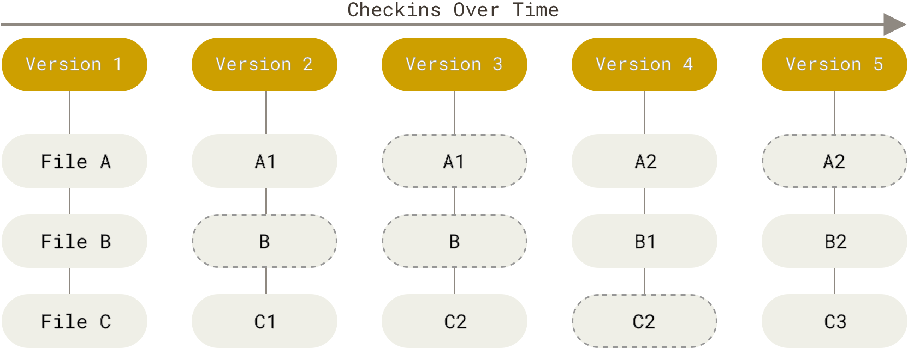
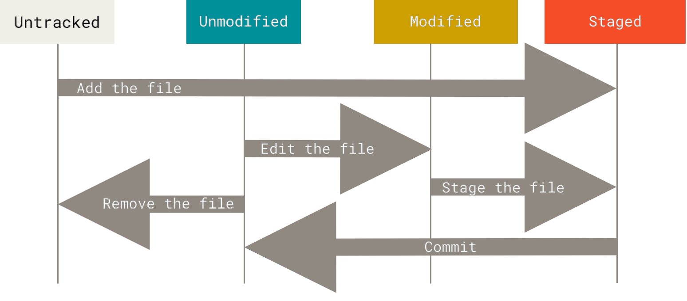

Control de Versions Git
Sessió 3 - Curs zero d’Informàtica
Perquè necessitem control de versions?
Història d’un fitxer
Habitualment gestionem múltiples versions d’un document de forma manual.
projecte.docxprojecte_v1.docxprojecte_abans_revisió.docxprojecte_final_definitiu_ara_si.docx...
Història d’un fitxer (una mica millor)
Habitualment gestionem múltiples versions d’un document de forma manual.
20260727_projecte.docx20260728_projecte.docx20260810_projecte.docx20260915_projecte.docx...
Perquè necessitem control de versions?
Imaginem aquesta situació:
Hem estat treballant en un projecte durant dues hores.
Després d’aquestes dues hores, el nostre projecte no funciona, i volem recuperar com estava abans dels canvis.
Quin dels fitxers que teniem és el correcte a recuperar?
No necessitem còpies dels fitxers, necessitem la seva història.
Sistemes de control de versions

Control de versions
Un sistema de control de versions guarda la història d’un projecte.
Aquesta història permet:
- Consultar la seva evolució
- Visualitzar les diferències entre dues versions
- Navegar entre versions sense perdre informació
- Consultar qui ha fet/quan s’ha fet/perquè s’ha fet un canvi concret.
- Permeten la col·laboració de múltiples desenvolupadors (pròxima sessió)
- Permeten treballar en paral·lel (pròxima sessió)
Git
Git és un sistema de control de versions (VCS).
Ens permet guardar la història d’un projecte i consultar-la posteriorment.
Es crea l’any 2005 per donar suport al desenvolupament del kernel de Linux.
Git: Què és una versió?
En Git, cada versió guardada s’anomena commit.
Un commit té associat:
- l’estat dels fitxers del projecte en un moment concret
- metadades dels canvis: autor, data, missatge…
Podem imaginar un commit com una fotografia de l’estat del projecte.
Git: Què és una versió?
Model mental de Git
Tenim un projecte controlat per Git.
Modifiquem README.md.
El canvi ja forma part de la història de Git?
La resposta és que no.
Estat dels fitxers
En Git, els fitxers poden estar en diferents estats:
- Sense seguir (untracked): Git encara no controla aquest fitxer.
- Modificat (modified): El fitxer conté canvis respecte respecte al commit anterior.
- Preparat (staged): els canvis del fitxer s’han seleccionat per formar part del pròxim commit.
- Guardat (commited): l’estat actual del fitxer forma part de la història del repositori.
Tres àrees
Quan treballem amb Git, podem distingir tres àrees:

Àrees de Git
- Working directory: els fitxers amb què estem treballant.
- Staging area: els canvis que hem seleccionat per incloure en el pròxim commit.
- Repository: la història del projecte, formada pels commits.
Hands-On
Hands-On: Instal·lació
Verificar amb la línia de comandes:
Hands-On: Configuració
Configurem el nostre nom i el correu:
--global indica que s’aplicarà a tots els projectes.
Comandes bàsiques
Comandes bàsiques: ajuda
Les comandes de Git tenen el següent format:
Podem obtenir informació sobre una comanda concreta amb qualsevol de les següents opcions:
git help <verb>git <verb> --helpman git-<verb>
Comandes bàsiques: git init
Per crear un repositori nou, naveguem al directori del projecte1 i executem:
Aquesta comanda crea el directori .git2 on es guardarà tota la informació del repositori.
Comandes bàsiques: git status
La comanda git status ens mostra en quin estat/àrea estan els fitxers/canvis:
On branch main
Your branch is up to date with 'origin/main'.
Changes to be committed:
(use "git restore --staged <file>..." to unstage)
new file: README.md
Changes not staged for commit:
(use "git add <file>..." to update what will be committed)
(use "git restore <file>..." to discard changes in working directory)
modified: LICENSE.txt
Untracked files:
(use "git add <file>..." to include in what will be committed)
Notes.txtComandes bàsiques: git status
Els canvis indicats estan dins de l’àrea d’staging. S’afegiran a la següent versió.
Comandes bàsiques: git status
Els canvis indicats estan dins de l’àrea de treball. Git coneix els fitxers, ha detectat que hi ha canvis, però no s’afegiran a la següent versió.
Comandes bàsiques: git status
Git ha detectat que hi ha fitxers que no havia vist anteriorment. No estan en cap àrea.
Comandes bàsiques: git status
També podem veure la sortida simplificada fent git status -s:
Comandes bàsiques: git add
La comanda git add <file> ens permet moure un fitxer des de l’àrea de treball a l’àrea d’staging1.
També ens serveix per afegir fitxers nous.
Comandes bàsiques: git diff
git diffgit diff --staged
Comandes bàsiques: git commit
La comanda git commit ens permet crear una nova versió (anomenada commit) del repositori.
Comandes bàsiques: git restore
git restore ens permet dues coses:
git restore <file>elimina els canvis d’un fitxer en l’àrea de treball.git restore --staged <file>mou els canvis d’un fitxer de l’àrea staging a l’àrea de treball.
Comandes bàsiques: git rm
git rmgit rm --cached
Quiz

Quina comanda fa cada acció?
Hands-On: Comandes bàsiques de Git
Visualitzant la història
Fins ara hem après com crear commits, i tenim una història.
Com podem consultar-la?
Visualitzant la història: git log
La comanda git log mostra els commits del repositori.
Cada commit conté informació com:
- identificador
- autor
- data
- missatge
Visualitzant la història: git log
$ git log
commit bc2c21477b82b61d797d3774017b4e6d001ed977 (HEAD -> main)
Author: Mr Potato <mr@potato.com>
Date: ...
updated files
commit d680b727d6a7291f8b3ddb99a6c0bc65eaf6ca24
Author: Mr Potato <mr@potato.com>
Date: ...
added license
commit efb97ff19b232ca54878f5ae1368a436606c9b77
Author: Mr Potato <mr@potato.com>
Date: ...
added readmeVisualitzant la història: git log
Podem simplificar la sortida fent servir --oneline:
Visualitzant la història: git log
També podem veure des d’un commit concret amb git log <c1>..<c2>, on c1 i c2 són dos identificadors de commit.
Podem fer servir l’identificador especial HEAD per indicar el commit on ens trobem.
Visualitzant la història: git show
Amb git show podem consultar quins canvis introdueix un commit concret:
Visualitzant la història: git diff <c1>..<c2>
Per comparar dues versions (no necessàriament consecutives), podem fer servir git diff <c1>..<c2>, on c1 i c2 són dos identificadors de commit.
Per exemple:
Versió efb97ff: README.md té:
Versió bc2c214: README.md té:
Visualitzant la història: git diff <c1>..<c2>
$ git diff efb97ff..bc2c214
[...]
diff --git a/README.md b/README.md
index a19abfe..a111ef1 100644
--- a/README.md
+++ b/README.md
@@ -1 +1 @@
-Hola
+Hola que talRecuperar versions antigues
Hem vist com consultar la història del projecte.
Un dels punts forts dels VCS és poder recuperar versions anteriors.
Com podem recuperar una versió anterior amb Git?
Recuperar un fitxer
Podem recuperar un fitxer tal com estava en un commit anterior amb:
Per exemple:
El fitxer README.md tornarà a tenir el contingut que tenia en aquell commit.
Això només modifica el working directory, no crea automàticament un commit.
Hem recuperat el contingut anterior, però la història de Git no ha canviat.
Consultar una versió antiga
També podem situar-nos temporalment en un commit anterior:
En aquest punt estem consultant una versió antiga. No estem creant un nou commit ni modificant la història.
git checkout main o master per tornar on estavem.
Hands-On: Navegant la història
Recap
Recap: Conceptes
- Git guarda la història d’un projecte.
- Cada versió és un commit.
- Podem consultar, comparar, i recuperar versions antigues.
- 3 àrees: Working / staging / repository
Recap: Comandes
- git init
- git add
- git commit
- git log
- git show
- git diff
- git restore
Material addicional
- Llibre de Git: https://git-scm.com/book/en/v2
- The Missing Semester: https://missing.csail.mit.edu/2020/version-control/

Sessió 3 · Curs zero d’Informàtica 🏠